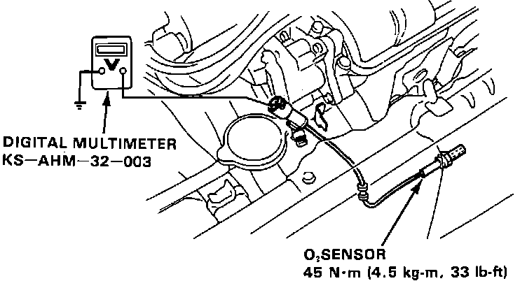
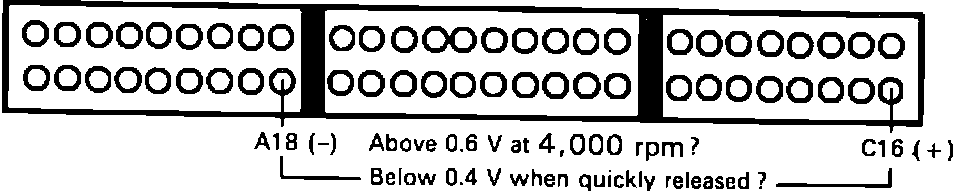

DTC 1
Code 1 indicates the ECU has received an unexpected voltage signal from the oxygen sensor circuit.Prior to testing, verify proper fuel pressure regulator operation. Refer to TESTING PROCEDURES in FUEL SYSTEMS for additional information.
1. With ignition off, remove HAZARD fuse from positive battery cable for 10 seconds to reset ECU.
2. Start engine and run until cooling fan comes on.
3. Hold engine at 1500 rpm for 15 minutes.
4. Observe check engine light, if light did not come on, problem is intermittent. Check for loose connections at thermostat, oxygen sensor and at right shock tower. If light did come on, verify code 1 has reset and continue. If additional codes exist, repair systems indicated before continuing.
Oxygen Sensor Testing:

5. Disconnect oxygen sensor and connect digital voltmeter between oxygen sensor and ground.
6. With engine at normal operating temperature, hold engine at 4000 rpm for 10 seconds while observing voltmeter. Then release throttle completely and observe voltage.
Voltage should be above 0.6 volts at 4000 rpm and below 0.4 volts during closed throttle deceleration.
7. If either voltage was incorrect, replace oxygen sensor. If voltage was as specified, continue.
8. Stop engine and reconnect oxygen sensor.
Oxygen Sensor Testing:

9. Install test harness between ECU and connector.
10. Connect voltmeter between pins C16 and A18.
11. With engine at normal operating temperature, hold engine at 4000 rpm for 10 seconds while observing voltmeter. Then release throttle completely and observe voltage.
Voltage should be above 0.6 volts at 4000 rpm and below 0.4 volts during closed throttle deceleration.
12. If voltage was incorrect, repair WHT wire between ECU terminal C16 and oxygen sensor. End of test.
13. If voltage was correct, replace electronic control unit.